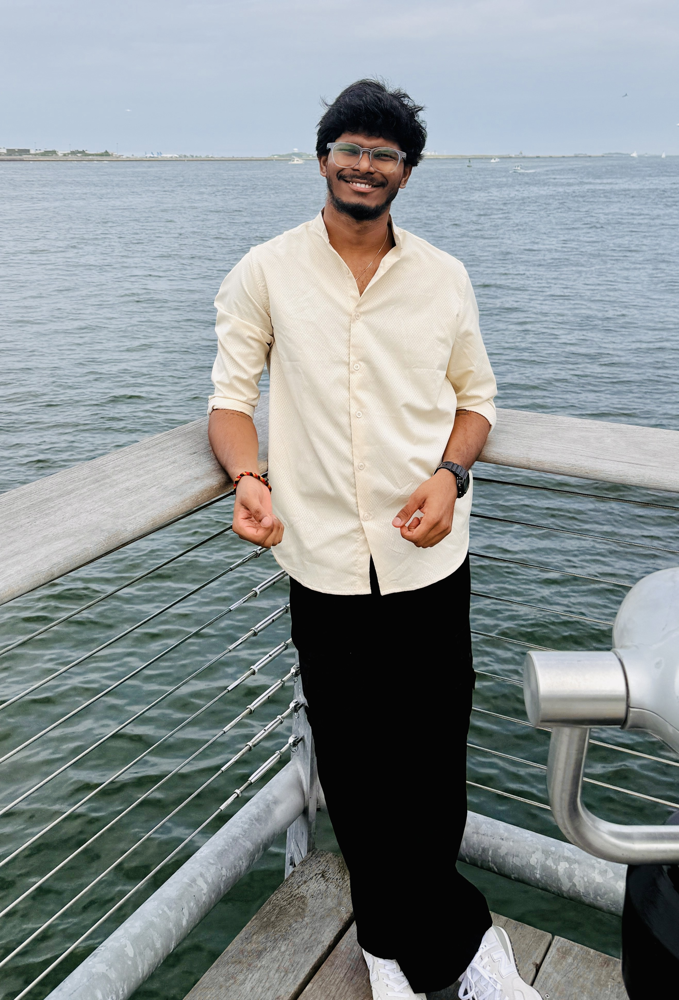

Who I Am

My journey began as a passion project inspired by my family and mentors, who taught me to embrace everything life has to offer and honor the stories of the people I meet.
I blend analytics and creativity to turn data into stories and strategies into impact. With roots in Hyderabad and a drive for exploration, I've learned to embrace every opportunity life offers.
I'm currently pursuing my Master's in Business Analytics at WPI, diving into predictive modeling and data visualization. My professional experience spans business development, consulting, and creative projects — from managing client relationships to building digital content.
Recently relocated from Hyderabad to Massachusetts, I'm always learning and growing. My journey has been deeply shaped by my cultural heritage and my experience navigating different cultural spaces as an Indian-American.
This space is more than a portfolio — it's a living document of my journey. From personal stories and professional insights to the adventures that fuel my creativity, I hope something here resonates with you.
"Life is a chessboard, and every move counts. I play with strategy, creativity, and heart."
What Drives Me
Analytics & Strategy
Turning messy data into clear decisions. I believe every number tells a story — the job is to find it.
Photography & Storytelling
Capturing moments that words can't fully hold. From travel to street to portraits — I shoot what moves me.
Community & Connection
Whether through Rotaract, mentorship, or just a good conversation — I believe in the power of showing up.